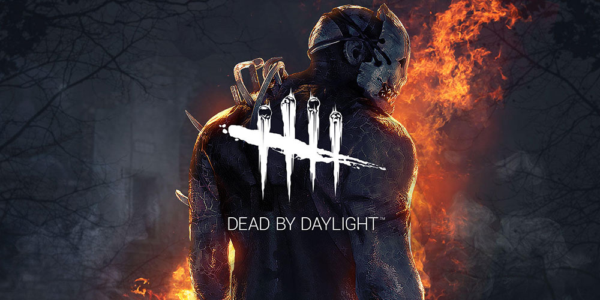

Dead by Daylight es un juego indie de horror desarrollado y publicado por Behaviour Interactive. Dead by Daylight es un juego de horror de multijugador en el que un jugador representa el rol del asesino despiadado y los 4 restantes juegan como supervivientes que intentan escapar de él para evitar ser capturados, torturados y asesinados. Fue publicado el 14 de junio de 2016 en PC (Steam) y el 20 de junio de de 2017 en Consolas (XBOX/PS4).
| Killers: | ||||||
|---|---|---|---|---|---|---|
| Enfermera | Cenobita | Freddy Krueger | La Cerda | El Payaso | El Espiritu | La Legion |
| Dredge | El Trampero | La Plaga | Ghost Face | El Demegorgo | El Oni | El Arponero |
| El Espectro | Pyramid Head | El Deterioro | Los Mellizos | El Traicionero | Nemesis | Onryo | El Pueblerino | La Forma | La Bruja | El doctor | La Cazadora | Buba | Freddy Krueger |